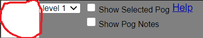
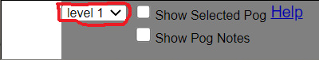
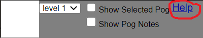
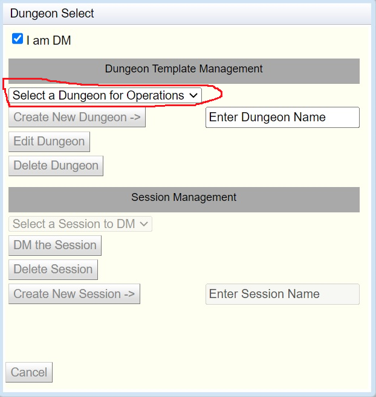
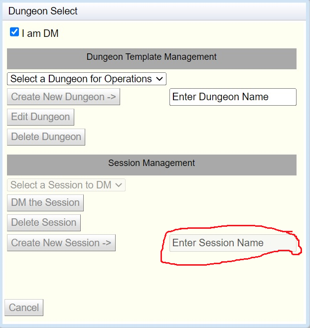

Following are some hints on how to use Electronic Battle Mat
Electronic Battle Mat Overview
Electronic Battle mat is a Web Application to help DMs and
players have a better experience for running a role playing game. It
encompasses four modes of operation.
- Creating and editing Template dungeons
Template dungeons contain all the maps and resources needed for
managing a single adventure. It is called a template because it is
not actually used directly by end users. This is because multiple
groups could be playing the same dungeon at the same time and you
would not want them to interfere with each other.
- Creating Dungeon Session
A dungeon session is a copy of a dungeon template that is owned
by a certain group. This session is private so it can be changed
without interfering with other groups playing the same one.
- DMing a Session
In this mode of operation a DM takes control of a session. They can
do may things like clear areas of FOG of WAR so players can see
stuff. They can make monsters and room objects visible or invisible
to players. They can move pogs around the map to show correct
positions. They can add new stuff like monsters that were not in the
dungeon template SURPRISE this dragon happened by and wants to
eat your face.
- Player joining a Session
In this mode of operation a player can view the Battle Mat.
They have very little functionality other than panning and zooming
the map. They can also create a PC pog and move it around the visible
areas of the map.
Creating a New Dungeon
These are the steps to create a new dungeon. They are performed in the
Dungeon Manager Dialog when "I am DM" is checked
- Check the I am DM check box
This opens up all the operations and privileges of a Dungeon
Master.
- Name the new dungeon
In the text box labeled "Enter Dungeon Name" enter the
name of your new dungeon. You can use letters, numbers and spaces in
the name. The name must be greater than 4 letters long and cannot
match an existing name. Once a legal name is entered the "Create
New Dungeon" button will be enabled.

- Click the "Create New Dungeon" button
This will create a new dungeon with the entered name by copying the
"Template" dungeon. It should now be visible in the "Select
a Dungeon for Operations" list.

Editing a Dungeon
These are the steps to edit a dungeon. They are performed in the
Dungeon Manager Dialog when "I am DM" is checked
- Check the I am DM check box
This opens up all the operations and privileges of a Dungeon
Master.
- Select a Dungeon to edit
In the drop down called "Select a Dungeon for Operations"
select a dungeon to edit. This will enable the "Edit
Dungeon" button.
- Press the "Edit Dungeon" button
This will load in the dungeon and display the first level map.
The ribbon bar will also map to the available operations that the DM
can do on the dungeon.
Dungeon Editor Layout
This is how the editor should look when it is first opened up on
a new dungeon created from the "Template" dungeon.

- This is the Ribbon Bar area.
- This is the Battle Mat area.
- This is the Information
Management area.
Ribbon Bar Area
- Selected Pog Area

This will show the picture of the currently selected Pog. You
can click and drag in this area to place a copy of the pog onto the
map.
- Level Selection Area

This is where you select which dungeon level you wish to edit.
- Show Pog Notes Checkbox

By checking this box you will cause a floating dialog window to
appear. This window will allow you to view and edit the notes placed
on a pog. You can edit both regular notes which are viewable by the
players or DM notes only viewable by the DM.
- Show Selected Pog Checkbox

By checking this box you will cause a floating dialog window to
appear. This window will allow you to view the picture of the
selected pog. You can resize the window by dragging in the lower
right corner allowing you to get a better view.
- Show Help

By clicking here you will get this help page.
Battle Mat Area
This area is where the map and all the objects placed on it appear.
When you are DMing a session this will also display the areas that
have Fog of War (FOW) on them. It will be transparent to the DM
but will be solid black to the players preventing them from seeing
stuff. Following are a few things you can do with and to this area.
- Pan the Map
By clicking on the map and holding the mouse button down you
can change the position of the map.
- Zoom the Map
By spinning the center mouse button you can zoom in and out of
the map.
- Move Pogs around
You can click on a pog and drag it to a new spot.
- Add new pogs to map
By dragging an dropping a picture of a pog from the ribbon bar
you will create a new pog on the map. This is a copy of the pog and
not the original. So if you want two more of a monster already on the
map. You just need to select it so it shows in the ribbon bar then
drag and drop twice from the ribbon bar.
- Change properties of a pog
By right clicking on a pog you can change some properties. Like
make it visible or invisible to players or give it a number to help
players more easily identify it. You can even delete it from the map.
This area allows the DM to edit and create all kinds of
information related to the dungeon. It is broken into different tabs
to help separate functionality.
- Art Assets
This area allows you to manage the artwork needed for you dungeon
- Dungeon Editor
This area allows you to edit and add dungeon levels
- Pog Editor
This area allows you to do things like edit, create and delete pogs.
Create a new Dungeon Level
- From the ribbon bar click the ""Level
Options" button" as show below
Caution you are editing the existing level be sure
to do the following steps before changing anything!
- In the Level options dialog click the "Create New
Level" button
This will initialize the dialog and get it ready to create a
new level
- Type the name of the new level into the level name text box
- Upload a picture for the level
The level will already have a picture. It was copied from level 1 on
the Template Dungeon but this probably isn't what you want. If you
have a png or jpeg picture already you can upload that. If you just
want to create a picture starting from the existing one you can
download and edit that. To upload a picture hit the "Choose
File" button and navigate to your picture. The picture will not
actually get upload until you hit the Ok button.
- Adjust grid information
Electronic battle mat uses a grid to hold pog images. Many times the
picture that you upload also has a grid so we want the two to match
up. So you will need to play with the grid options to make that
happen. "Grid Size" is the amount of pixels that a
square in the grid is on every size. A number between 30 and 60 is
typical. Many times that grid in a picture doesn't start off exactly
in the upper left corner so you can play with "Grid Offest X and Y"
to make it line up. These values are double precision so you can
enter something like 13.5 to get it very precise.
- Once everything is entered click the "Ok"
button to create the actual level
- You will need to select the new level in the drop down list
to see it.
You might have to go back to the level option dialog several
times to get the grid alignment to exactly match up.
Editing a Dungeon Level
From the ribbon bar select the level to edit as show below
If you want to change the picture of adjust the grid follow steps 4
and higher in the Create a new
Dungeon Level Mainly the job of editing a dungeon involves placing
pogs into the grid over the level picture and adjusting the properties
of the pog. You can move a pog around if it is already on the map by
left clicking on it, and while holding the mouse button down, move it
to a new spot. You can also do this on a touch screen by touching the
pog and drag it. You can add new pogs to the map by dragging and
dropping one from the Selected Pog Area. See the section below
about Selected Pog Operations
Selected Pog Operations
There is an area on the ribbon bar that represents the Selected
Pog as shown below. Basically the selected pog is the last pog that
was operated on.
In the edit mode there are two ways to set the selected pog.
- Click on a pog that is already on the map.
The selected pog on the map will have a black border around it
to help identify it.
- Use one of the pog editors as shown below to create, edit or
select either a Monster or a Room Object pog. More about these
dialogs will be explain in their sections Pog
Editors.

Many operations are affected by the selected pog. For example you can
select a Monster pog on the map an then hit the Monster editor button
to edit that one instance of monster. You can drag from the selected
pog area onto the map to create another new instance of the monster
including any edits you made to it. See section on Creating Dungeon Specific Pogs
Managing Common Resource Pogs
A common resource pog is either a monster or a room object that
is in a common pool that can be used across all dungeons. The template
editors have two major areas as explained below.
Select template area

This area is where you select an existing common template. Since there
can be hundreds or thousands of items in the common area a filtering
mechanism is supplied to help in the selection. Just select the
appropriate filters from the drop down lists and then hit the "Apply
Filters" button to populate the drop down list below the button.
Then select the appropriate item from the list to make it the selected
pog. The edit section of the dialog should then fill in with the
correct information.
CAUTION When this dialog first comes up the
information in the edit section will be for the selected pog. This
is probably not a common template so make sure you do the selection
steps first!
Edit Pog area

This area is where you edit information about a pog. A pog needs
a unique name and a URL to a valid picture. The picture has to end
with extension png, jpg, or jpeg. If a valid url is entered then the
picture should show up on the bottom of the dialog. You can also edit
some filtering information like class, race, or gender. If this is a
common resource pog it will then help with filtering in the selection
area. Be careful with the case of the typing. "orc" and "Orc" will
show up as two different races in the filter list.
Create Template pog
To create a new template pog in the common area hit the "Create
New Template" button. This will clear out the edit section. You
will then need to fill in the correct information for the new pog.
Once you hit Ok the new common template pog will be created.
Creating Dungeon Specific Pogs
Sometimes a dungeon has some quirky pogs that don't really
belong in the common pool for other dungeons. To create one is
straight forward. Just select any pog of the appropriate type either
Monster or Room Object. Then drag it from the selected Pog area on the
ribbon bar to a place on the map. This will create a dungeon specific
instance. Then make sure to reselect it on the map so it becomes the
selected pog. Then call up the appropriate editor from the ribbon bar
for example Monster Editor. Then go to the edit section of the dialog
and fill in all the new information about this pog.
Dungeon Sessions
Dungeon sessions are a concept to help different groups of
individuals play the same dungeon at the same time. Sessions make it
possible so changes that one DM makes do not affect the other groups
also playing. Essentially a session is a copy of a dungeon template
that is then owned by a groups. All changes just happen in the copy.
Creating a Session
To create a new session do the following steps.
- Get into the Manage Dungeons dialog.
You can do this by revisiting the Electronic Battle Mat screen
and log back in.
- Check the I am DM check box
- Select the template dungeon you wish to make a session for

- Enter a new Session name
This name must be unique from other sessions in this dungeon
and it must be at least 4 characters long and can't start with "Enter
"

- Click the "Create New Session" to create the
session.
Now the Session name should be in the Select session list. This
makes it available for functions like "DM the Session" or "Delete the
Session"
NOTICE: Once you create a session any edits you make on the
template dungeon will not show up in the session. This is because a
session is actually a copy of the dungeons database so any new
changes will not show up in the copy.